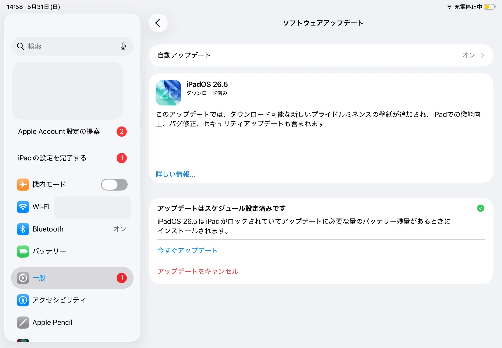
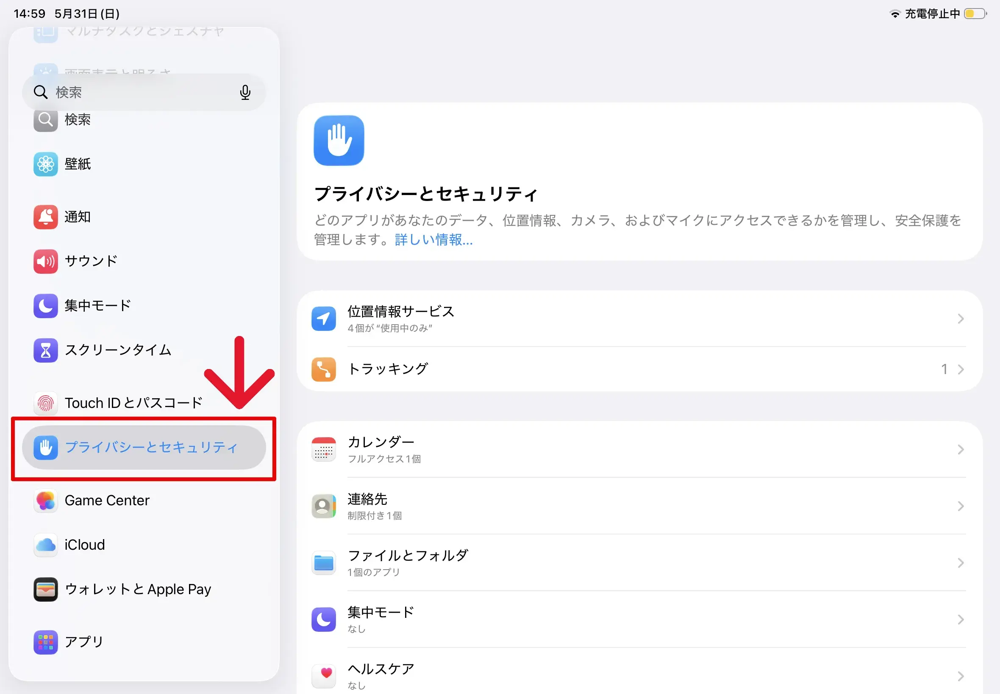
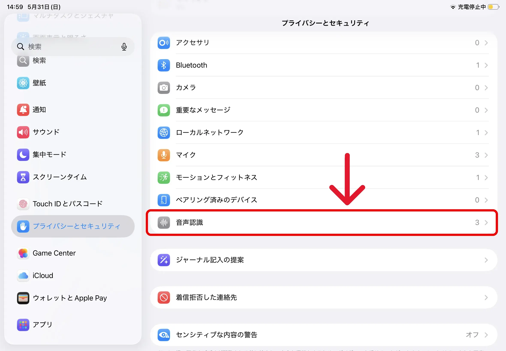
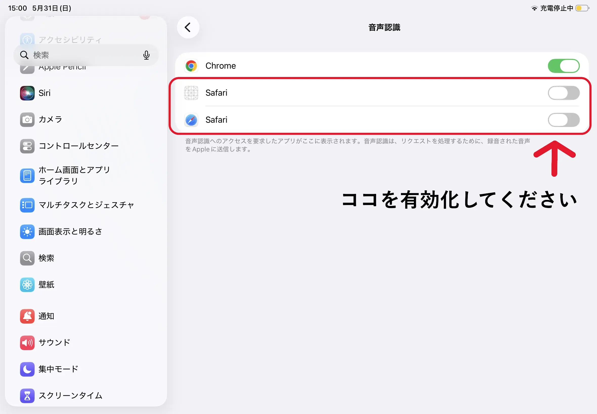
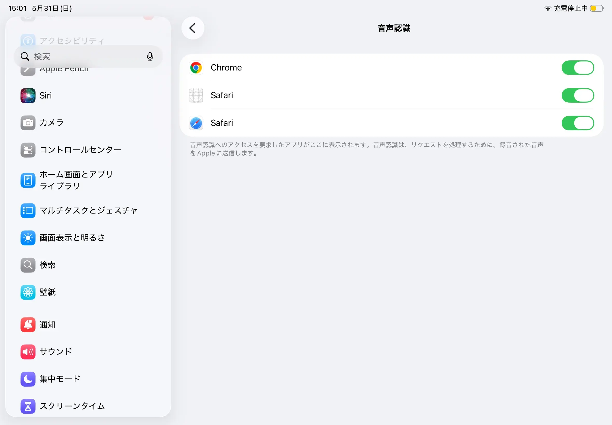
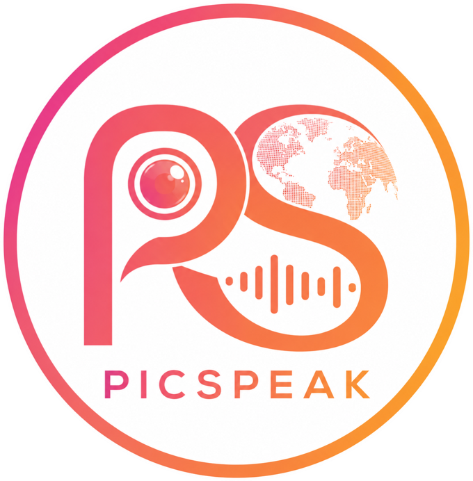

📖 PRE-PRACTICE
🎯 Target Level
クラスと名前を入力してスタートしてください。
※入力した情報はブラウザに保存され、次回から自動入力されます。
Tap START and speak...
ピックスピークは、目の前の写真を英語で描写して遊ぶ、新しいスピーキング学習アプリです！
正しい英語を言うと画面が光ってポイントGET！ゲーム感覚で英語を話せるようになるよ！
モードとレベルを選んで画像を選択します。
STARTを押すとマイクがオンになります。画像に映っているモノや状況を英語でどんどん描写しましょう！
ターゲット表現を言うと、リアルタイムで青色に光ってポイントGET！
終了後、言えなかった表現は「発音練習モード(🎤)」で反復練習できます！

「設定」＞「一般」＞「ソフトウェアアップデート」を確認。システムが古いとマイクが反応しないことがあります。

iPadの「設定」アプリから、左メニューを下へスクロールして「プライバシーとセキュリティ」をタップします。

右側に表示されるメニューの中から、「音声認識」を探してタップします。
※「マイク」の項目も合わせて確認してください。

普段使っているブラウザ（SafariやChrome）の右側のスイッチが「オン（緑色）」になっているか確認してください。

💡 魔法の解決策：これでも反応しない場合は、一度iPadの電源を完全に切り、再起動してみてください。多くの場合これで直ります！

PicSpeak 2.0写真から始まる、新しい英語体験。6つのモードで話す力を伸ばそう。
オンにすると、言葉のヒントが画像上に浮かび上がります。
Press START and speak loudly.
（STARTを押して、大きな声で話しましょう）
(Loading...)
🗣️ YOUR TRANSCRIPT
(Press START and read the passage)
(Loading...)
Your Answer
(Tap START to answer)
Your Description
(Tap START to describe)
What do you like to do in your free time?
Your Answer
(Tap START and answer)
ホーム画面に追加
全画面で快適にプレイできます。
下部の （共有ボタン）をタップし、
「ホーム画面に追加」 を選択してください。